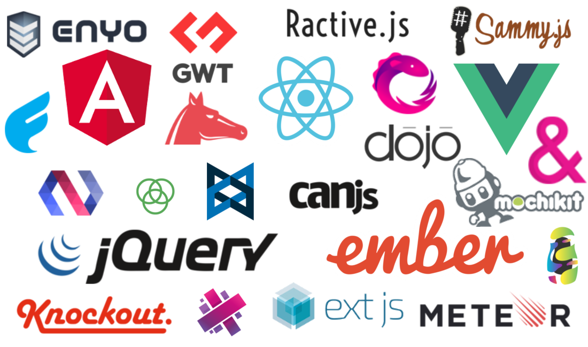

A front-end library is a scaffold for building your front end. It usually includes some way to structure your files (for example, via components or a CSS preprocessor), make AJAX requests, style your components, and associate data with DOM elements.
